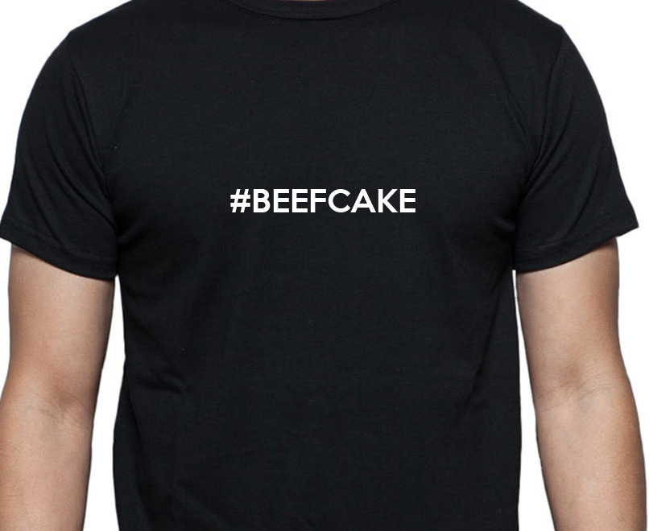

Solid Type System
vs
Runtime Checks and Unit Tests
Vladimir Pavkin
Plan
- Fail Fast concept
- Type Safe Patterns
Fail Fast
Immediate and visible failure
Where can it fail?
- Compiler
- Linters
- Unit tests
- Runtime checks
- Handled runtime exceptions & assertions
- Unhandled runtime failure
Handling runtime exceptions
assert(!list.isEmpty, "List must be empty")
try {
str.toInt
} catch {
case _:Throwable => 0
}
Where can it fail?
- Compiler
- Linters
- Unit tests
- Runtime checks
- Handled runtime exceptions & assertions
- Unhandled runtime failure
Runtime checks
if(container == null)
if(container.isInstanceOf[ContainerA])
Where can it fail?
- Compiler
- Linters
- Unit tests
- Runtime checks
- Handled runtime exceptions & assertions
- Unhandled runtime failure
Unit tests
it should "throw NoSuchElementException for empty stack" in {
val emptyStack = new Stack[Int]
a [NoSuchElementException] should be thrownBy {
emptyStack.pop()
}
}
it should "not throw for empty stack" in {
val stackWrapper = StackWrapper(new Stack[Int])
noException should be thrownBy stackWrapper.pop()
}
Where can it fail?
- Compiler
- Linters
- Unit tests
- Runtime checks
- Handled runtime exceptions & assertions
- Unhandled runtime failure
Linters
scalacOptions ++= Seq(
"-Xlint",
"-deprecation",
"-Xfatal-warnings"
)
// Wrong number of args to format()
logger.error(
"Failed to open %s. Error: %d"
.format(file)
)
Where can it fail?
- Compiler
- Linters
- Unit tests
- Runtime checks
- Handled runtime exceptions & assertions
- Unhandled runtime failure
The goal
To move as much as possible to the Compiler
How?
Just give it
enough type information.
Type system to the rescue!
Before we start...
Examples domain?
Beefcakes!
No offense intended :)
Ok?
def becomeAMan(douchebag: Person): Man =
if(douchebag.weight > 70)
new Man(douchebag.renameTo("Arny"))
else
null
No! Unhandled runtime failure!
becomeAMan(vpavkin).name //vpavkin.weight < 70
NULL
Can we handle this?
var man = becomeAMan(person)
if(man != null)
name
else
//...
Still not nice.
- compiler won't complain if you forget to check
- code client has to clutter code with runtime checks (or fail)
If you control the source code,
don't ever usenullas a return result.
It's like farting in an elevator.
Some random guy at a random Scala forum
The problem is
insufficient type information!
Return type should be something like ManOrNull
Option
Option
sealed trait Option[T]
case class Some[T](x: T) extends Option[T]
case object None extends Option[Nothing]
Better API
def becomeAMan(douchebag: Person): Option[Man] =
if(douchebag.weight > 70)
Some(new Man(douchebag.renameTo("Arny")))
else
None
- code is documentation
- client has to deal with
Noneresult at compile time.
Use wrapped value?
def firstWorkout(douchebag: Person): Option[WorkoutResult] =
becomeAMan(douchebag).map(man => man.workout())
Unwrap?
def willHaveASexyGirlfriend(douchebag: Person): Boolean =
becomeAMan(douchebag) match {
case Some(man) => true
case None => false
}
Exceptions
Classic
def workout(man: Man): WorkoutResult =
if(!man.hasShaker)
throw new Error("Not enough protein!!!!111")
else
// do some squats or stare in the mirror for 1h
Again!
- Client either uses
try/catchor fails at runtime! - Return type doesn't tell anything about possible failure
Let's add some types!
scala.Either
or
scalaz.\/
Declare possible failure
Better API
def workout(man:Man): ProteinFail \/ WorkoutResult =
if(!man.hasShaker)
ProteinFail("Not enough protein!!!!111").left
else
someWorkoutResult.right
- code is documentation
- client has to deal with errors at compile time.
scalaz.\/
sealed trait \/[E, R]
case class -\/[E](a: E) extends (E \/ Nothing)
case class \/-[R](a: R) extends (Nothing \/ R)
Use wrapped value?
workout(man).map(result => submitToFacebook(result))
// type is
// ProteinFail \/ Future[List[FacebookLike]]
Unwrap?
def tellAboutTheWorkout(w: ProteinFail \/ WorkoutResult): String =
w match {
case -\/(fail) => "F**k your proteins, I can do without it"
case \/-(result) =>
s"Dude, eat proteins, or you won't do like me: $result"
}
isInstanceOf[Man]

isInstanceOf[T]
trait GymClient
case class Man(name: String) extends GymClient
case class Douchebag(name: String) extends GymClient
def gymPrice(h: GymClient): Int =
if(h.isInstanceOf[Man]){
val man = h.asInstanceOf[Man]
if(man.name == "Arny") 0 else 100
} else {
200
}
So runtime.
// Add another client type
case class PrettyGirl(name:String) extends GymClient
It still compiles.
And we charge girls as much as douchebags! (... else 200)
It's an unhandled runtime failure!
sealed ADT
+
pattern matching
sealed = can't be extended in other files
Algebraic Data Type
1) Product types
2) Sum types
Compiler knows
all the possible class/trait children.
Sealed ADT + pattern matching
sealed trait GymClient
case class Man(name: String) extends GymClient
case class Douchebag(name: String) extends GymClient
def gymPrice(h: GymClient): Int = h match {
case Man("Arny") => 0
case _: Man => 100
case _: Douchebag => 200
}
// compiler checks, that match is exhaustive
What if we add girls now?
sealed trait GymClient
case class Man(name: String) extends GymClient
case class Douchebag(name: String) extends GymClient
case class PrettyGirl(name:String) extends GymClient
def gymPrice(h: GymClient): Int = h match {
case Man("Arny") => 0
case _: Man => 100
case _: Douchebag => 200
}
// COMPILE ERROR! Match fails for PrettyGirl.
Compiler saved us again!
Tagging
Gym DB
case class Beefcake(id: String,
name: String)
case class GymPass(id: String,
ownerId: String)
Safer: Tags
trait JustTag
def onlyTagged(value: String @@ JustTag): String
= s"Tagged string: $value"
// can use as plain String
onlyTagged("plain string") // Compiler error
val tagged = tag[JustTag]("tagged")
onlyTagged(tagged) // OK
Gym DB: safer keys
case class Beefcake(id: String @@ Beefcake,
name: String)
case class GymPass(id: String @@ GymPass,
ownerId: String @@ Beefcake)
Phantom Types
PullUp
sealed trait PullUpState
final class Up extends PullUpState
final class Down extends PullUpState
PullUp
class Beefcake[S <: PullUpState] private () {
def pullUp[T >: S <: Down]() =
this.asInstanceOf[Beefcake[Up]]
def pullDown[T >: S <: Up]() =
this.asInstanceOf[Beefcake[Down]]
}
object Beefcake {
def create() = new Beefcake[Down]
}
PullUp
val fresh = Beefcake.create() //Beefcake[Down]
val heDidIt = fresh.pullUp() //Beefcake[Up]
val notAgainPlease = heDidIt.pullUp()
// CompileError:
// inferred type arguments [Up] do not conform
// to method pullUp's type parameter bounds
Path Dependent Types
The Two Gyms
class Gym(val name: String)
class Beefcake(val gym: Gym){
def talkTo(other: Beefcake): Unit =
println("Wazzup, Hetch!")
}
val normalGym = new Gym("nicefitness")
val swagGym = new Gym("kimberly")
val normalGuy = new Beefcake(normalGym)
val swagGuy = new Beefcake(swagGym)
normalGuy.talkTo(swagGuy) // we don't want that
The Two Gyms
Runtime solution
class Beefcake(val gym: Gym){
def talkTo(other: Beefcake): Unit = {
// throws IllegalArgumentException if false
require(this.gym == other.gym)
println("Wazzup, Hetch!")
}
}
Path Dependent Types
class A {
class B
}
val a1 = new A
val a2 = new A
var b = new a1.B // type is a1.B
b = new a2.B // Compile Error: types don't match
Type depends on the value it belongs to.
Type safe solution
class Gym(val name: String){
class Beefcake(val gym: Gym){
def talkTo(other: Beefcake): Unit =
println("Wazzup, Hetch!")
}
}
val normalGym = new Gym("nicefitness")
val swagGym = new Gym("kimberly")
val normalGuy = new normalGym.Beefcake(normalGym)
val swagGuy = new swagGym.Beefcake(swagGym)
normalGuy.talkTo(swagGuy) // doesn't compile, Yay!
This is not a talk
about Scala type system.
Not covered:
- Trait composition
- Existential types
- Macros
- Type Classes
- Shapeless
- ...